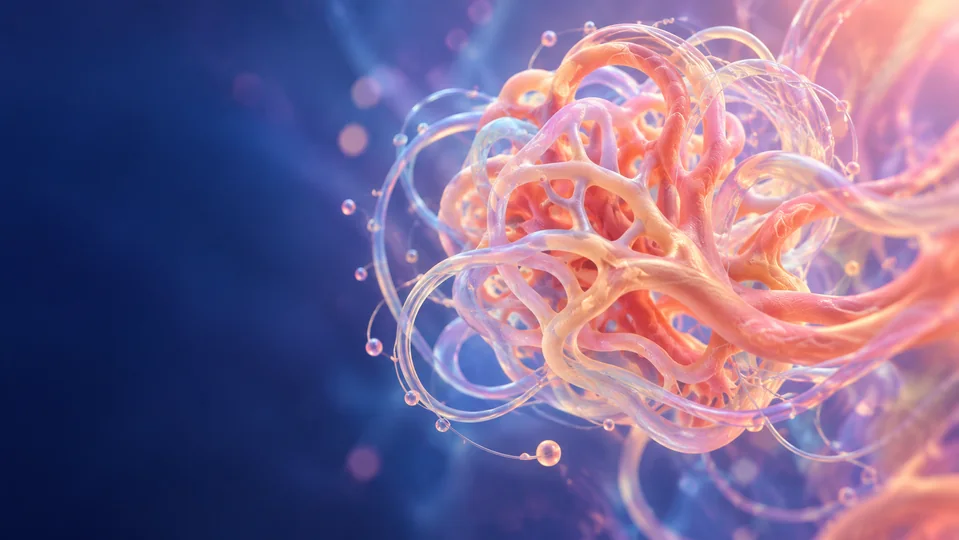
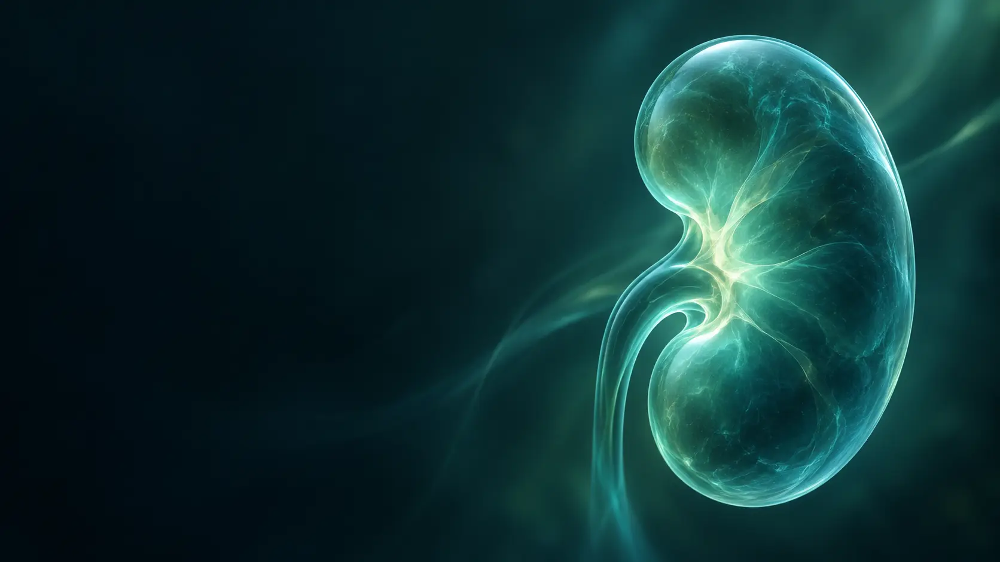
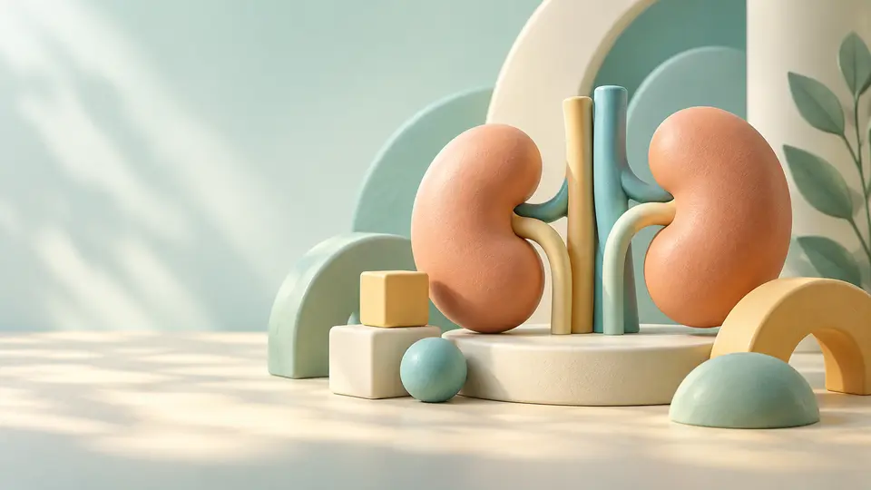

KIDNEYSPHERE · 学习中心
找到你的方向，
找到你的方向，
让学习持续发生。
从免费课程到专科培训，把视频、音频和文献串成自己的学习路径。每次回来，从感兴趣的内容继续。
六类培训方向音频与视频系列学习
 保持好奇，持续精进
保持好奇，持续精进
免费开始
先学习一节感兴趣的课程，探索不同专科主题。
浏览免费课程 → 学术回放 · ¥299/年周日、周三学术活动视频回放。培训课程另行收费。
了解年度会员 → 专科培训按项目系统学习，音视频按所购项目权限开放。
查看培训项目 →查看当前培训项目与定价
肾小球病 · 肾移植内科 · 重症肾内 · 肾脏病理 · 血管通路 · 儿童肾脏
文献库（UpToDate 风格）
像公众号一样沉淀：会议纪要 / 综述解读 / 指南要点 / 临床研究进展。首页会动态推荐最新文章。
内容形式
图片 / mp4文章支持上传 图片 或 短视频（mp4 ≤ 50MB），便于把会议摘要、讲课要点、病例随访做成可传播的内容。
分享方式：文章页提供"复制链接"，你可以粘贴到微信群或朋友圈。
加载中…

肾小球病查看本项目课程 →
肾移植内科查看本项目课程 → 重症肾内查看本项目课程 → 肾脏病理查看本项目课程 → 血管通路查看本项目课程 →
儿童肾脏查看本项目课程 →音视频课程库
分别筛选视频或音频，再按免费、会员与培训权限查找课程。
专家 PPT 与综述分享
未来也按五大社区方向分类：肾小球与间质性肾病 / 肾移植内科 / 重症肾内（电解质/酸碱）与透析 / 儿童肾脏病 / 罕见肾脏病。